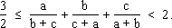
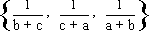
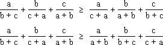
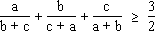
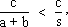
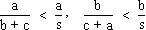
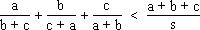
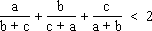
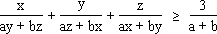

Solution to puzzle 59: Triangle inequality
A triangle has sides of length a, b, and c. We must show that 
Left inequality
The left side of the inequality is, in fact, true for all positive real numbers. We can prove it using the rearrangement inequality, stated below.
Let a1  a2
a2  ...
...  an and b1
an and b1  b2
b2  ...
...  bn be real numbers. For any permutation (c1, c2, ... cn) of (b1, b2, ... bn), we have:
bn be real numbers. For any permutation (c1, c2, ... cn) of (b1, b2, ... bn), we have:
a1b1 + a2b2 + ... + anbn  a1c1 + a2c2 + ... + ancn
a1c1 + a2c2 + ... + ancn  a1bn + a2bn-1 + ... + anb1,
a1bn + a2bn-1 + ... + anb1,
with equality if, and only if, (c1, c2, ... cn) is equal to (b1, b2, ... bn) or (bn, bn-1, ... b1), respectively.
That is, the sum is maximal when the two sequences are sorted in the same way, and minimal when they are sorted oppositely.
Without loss of generality, assume a  b
b  c.
c.
Then the sequences {a, b, c} and  are sorted the same way.
Rotating the second sequence, we derive the following inequalities:
= a/(c+a) + b/(a+b) + c/(b+c), and a/(b+c) + b/(c+a) + c/(a+b) >= a/(a+b) + b/(b+c) + c/(c+a)." />
Adding these two inequalities, and dividing by two, we get = 3/2." />
We must also show that equality can occur, which is easily seen by setting a = b = c.
Right inequality
In order to prove the right inequality, we must use the fact that a, b, c are the sides of a triangle.
Let s = (a + b + c)/2 be the semi-perimeter of the triangle.
In any triangle, a + b > c, and so a + b > s.
Hence  and similarly 
Adding the three inequalities, we get 
Therefore 
Additional puzzle
The following inequality is due to Gheorge Eckstein.
Let a, b, x, y, z be positive real numbers. Show that:
= 3/(a+b)." />
Further reading
 The Rearrangement Inequality by K. Wu and Andy Liu -- a tutorial that shows how to derive many other inequalities, such as Arithmetic Mean - Geometric Mean, Geometric Mean - Harmonic Mean, and Cauchy-Schwartz, from the Rearrangement Inequality
The Rearrangement Inequality by K. Wu and Andy Liu -- a tutorial that shows how to derive many other inequalities, such as Arithmetic Mean - Geometric Mean, Geometric Mean - Harmonic Mean, and Cauchy-Schwartz, from the Rearrangement Inequality- The left inequality is known as Nesbitt's Inequality
Source: Traditional